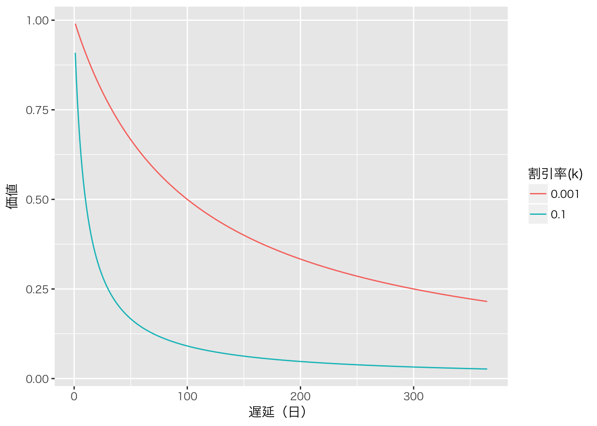
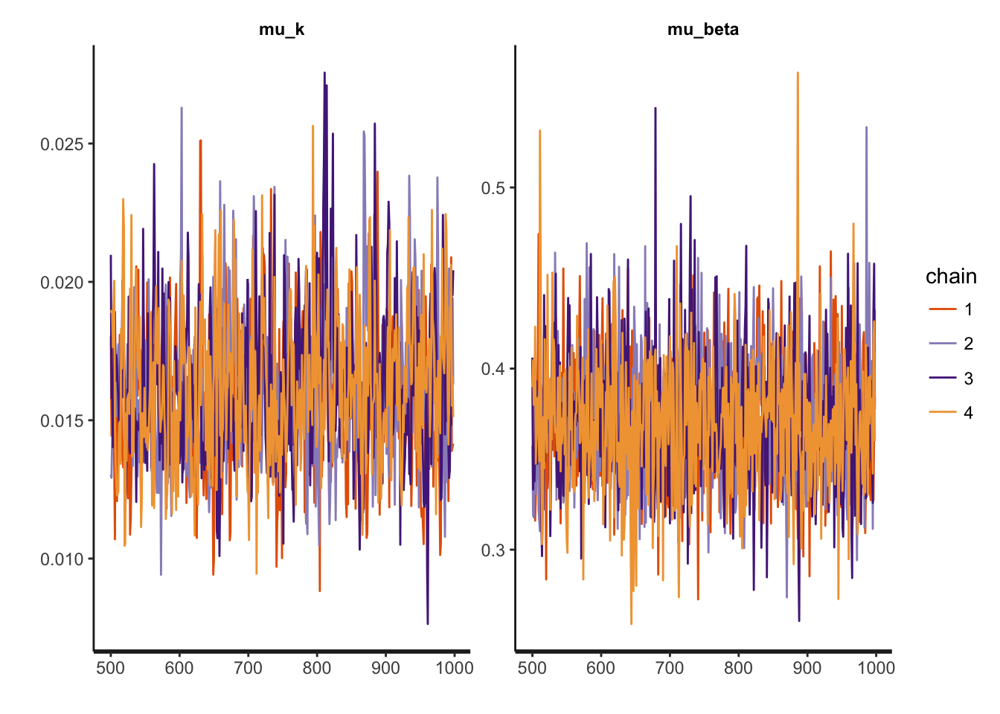
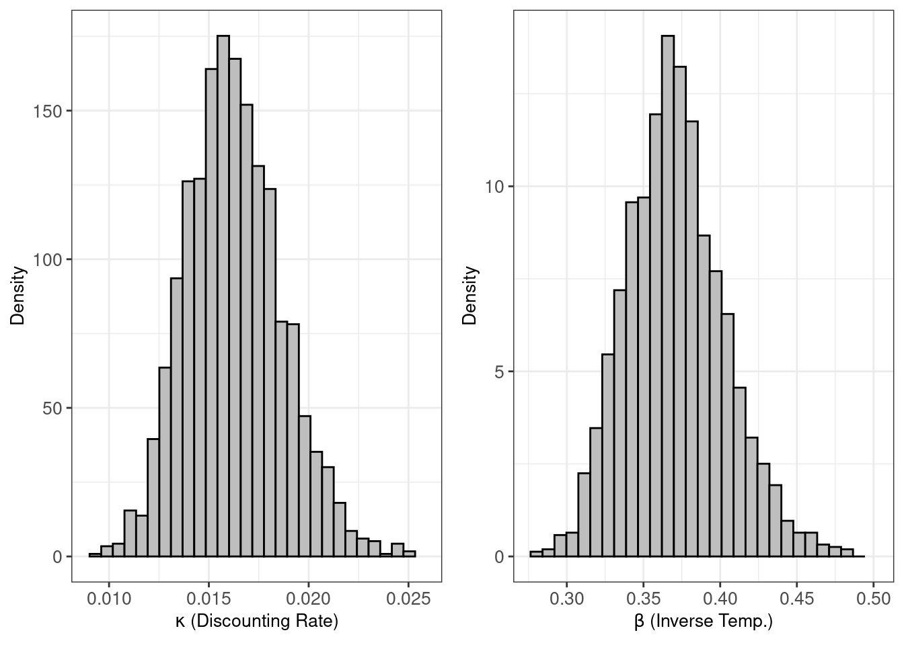
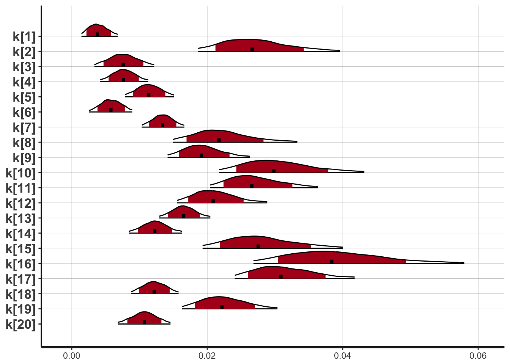

この記事は，Stan Advent Calendar 2017の16日目の記事です。
Stan Advent Calendar 2017をみると，Stanを覚えると色々なことができるなあと感想をもたれるのではないでしょうか？しかし，同時に「Stan難しそう」，「長くコードを書く自信がない」，「最初の一歩を踏み出すのが難しい」などの感想もあるかなと思います。そこで，この記事では，「Stanとかとりあえずいいから，気軽にベイジアン認知モデリングをやってみよう！」ということを目指します。
心理学や神経科学では，なんらかの認知課題を参加者にしてもらって，そのパフォーマンス（行動データ）を評価することが多いです。行動データの評価は重要ですが，その行動データが生成された背景にはなんらかのプロセスが存在する可能性があります。認知モデリングは，行動データが生成される過程を数理モデルで表現し，行動データから数理モデルのパラメータを推定する方法です。そして，ベイジアン認知モデリングでは，ベイズ統計学を用いて認知モデリングを行います。今回の記事では，ベイジアン認知モデリングを簡単にやってくれるhBayesDMパッケージを紹介します。
hBayesDMは，Woo-Young Ahn博士1の研究チームが開発したRパッケージです。hBayesDMは，hierarchical Bayesian modeling of Decision-Making tasksを略したものです。つまり，意思決定課題などの心理学・神経科学で用いられる認知課題を階層ベイズモデリングするパッケージです。認知課題の階層ベイズモデリングは，決して簡単とは言い難いStanコードを書く必要があるのですが，hBayesDMはとてもお手軽に階層ベイズモデリングをしてくれます（1行のコードでベイジアン認知モデリングができちゃいます！）。ここでは，階層ベイズについての説明はしません。日本社会心理学会 第4回春の方法論セミナーで簡単に説明していますので，参照ください。また，hBayesDMの詳細は，Ahn博士の作成した“hBayesDM Getting Started”を参照ください。
hBayesDM v0.4.0では，以下のモデルが使えます（今後も増える予定のようです）。たくさんのモデルが準備されていますね！
| 実験課題 | モデル | 関数名 |
|---|---|---|
| 選択反応時間課題 | Drift diffusion model(Ratcliff, 1978) | choiceRT_ddm |
| Linear Ballistic Accumulator model(Brown & Heathcote,2008) | choiceRT_lba | |
| 遅延割引課題 | Constant-Sensitivity (CS) model(Ebert & Prelec,2007) | dd_cs |
| Exponential model(Samuelson, 1937) | dd_exp | |
| Hyperbolic model(Mazur,1987) | dd_hyp | |
| アイオワギャンブル課題 | Prospect Valence Learning-DecayRI (Ahn et al.,2011;2014) | igt_pvl_decay |
| Prospect Valence Learning-Delta (Ahn et al., 2008) | igt_pvl_delta | |
| Value-Plus-Perseverance (Worthy et al., 2013) | igt_vpp | |
| 直交GO/NoGo課題 | RW+noise(Guitart-Masip et al., 2012) | gng_m1 |
| RW+noise+go bias(Guitart-Masip et al., 2012) | gng_m2 | |
| RW+noise+go bias+Pav.bias(Guitart-Masip et al., 2012) | gng_m3 | |
| M5(Cavanagh et al.,2013の表１) | gng_m4 | |
| 確率的逆転学習課題 | Experience-Weighted Attraction(Ouden et al., 2013) ) | prl_ewa |
| Fictitious update(Gläscher et al., 2009) | prl_fictitious | |
| Reward-Punishment(Ouden et al., 2013) | prl_rp | |
| リスク回避課題 | Prospect Theory(Sokol-Hessner et al., 2009) | ra_prospect |
| PT without loss aversion | ra_noLA | |
| PT without risk aversion(Tom et al., 2007) | ra_noRA | |
| ２腕バンディット課題 | Rescorla-Wagner (delta) model(Erev et al., 2010; Hertwig et al., 2004) | bandit2arm_delta |
| ４腕バンディット課題 | Fictive upd.+rew/pun sens.(Seymour et al., 2012) | bandit4arm_4par |
| Fictive upd.+rew/pun sens.+lapse(Seymour et al., 2012) | bandit4arm_lapse | |
| 最後通牒課題 | Ideal Bayesian observer model(Xiang et al., 2013) | ug_bayes |
| Rescorla-Wagner (delta) model(Gu et al., 2015) | ug_delta |
hBayesDMを使うには，事前に以下を準備しておく必要があります。
また，ggplot2，loo，mail，modeestなどパッケージも必要です（dependencies=TRUEにしておけば，hBayesDMのインストール時に入ります）。
Windowsユーザーは，以下でインストールしてください。
install.packages("hBayesDM", dependencies=TRUE)MacやLinuxユーザーは，devtoolsパッケージをインストールした上で，以下のようにgithub経由でインストールしてください。
devtools::install_github("CCS-Lab/hBayesDM")さくっと使ってみましょう。まずは，hBayesDMをロードします。tidyverseもロードしておきます。tidyverseをインストールされてない方は，install.packages(“tidyverse”, dependencies=TRUE)でインストールください。
library(hBayesDM)
library(tidyverse)hBayesDMでは，複数の実験課題に対して複数のモデルが準備されています。今回は，その中から遅延割引についてのモデルを用います。
「今日の1000円」と「1年後の1050円」の２つの選択肢があるとすれば，あなたは，どちらを選ぶでしょうか？
どちらを選ぶかは，人によりますが，「今日の1000円」を選んだ人も多いのではないでしょうか？いつ貰おうと報酬の客観的な金額は変化しないのですが，遅れて貰える報酬は，主観的には価値が割り引かれる傾向があります。このような遅延してもらえる報酬の価値が割り引かれる現象を遅延割引と呼びます。遅延するにつれて価値が割り引かれる様子は，数理モデルによって表現することができます。hBayesDMでは，Constant-Sensitivity model, Exponential model, Hyperbolic modelの３つの数理モデルを準備しています。ここでは，Hyperbolic modelを取り上げて，説明します。
Mazur(1987)2が提案したHyperbolic modelは，以下のような数理モデルです。Dは遅延になりますので，V(D)は，遅延した報酬の価値を意味します（なお，Vは0から1の範囲の値になります）。V(D)は，1を1+kDで割ったものになりますので，遅延するほど（Dが大きくなるほど），小さな値をとります。
\[ V(D) = \frac{1}{1 + kD} \]
遅延するほど小さな値をとる程度は，割引率（k）によって制御されます。例えば，下図のように，k = 0.001とk = 0.1の場合，kの値が大きいほど遅延による価値割引の程度が大きくなるようになります。

遅延割引課題では，割引率(k)を推定するために，「今日の1000円」と「明日の1100円」のどちらを選ぶかといった選択を何度もしてもらいます。これらの選択肢に対する個人の反応（行動データ）から，kを推定します。なお，kの推定にあたり，選択肢の価値にどのくらい従った反応をするのかにかかわる逆温度（β）パラメータも推定します。このように，認知モデリングでは，時点の異なる選択肢における個人の選択行動の背景にあるプロセスを推定します。
さて，遅延割引のHyperbolic modelについての理解が深まったところで，早速推定をしていきましょう！hBayesDMは，複雑なStanコードを書かなくても階層化されたベイジアン認知モデリングをやってくれるのですが，それはある程度，型にはまった形式のデータをセットを使うことで実現されています。
「hBayesDM Getting Started」の「How to use hBayesDM」の「1. Prepare the data」にある「here」というリンクをクリックするとサンプルデータセットを入手できます。今回は，そのサンプルデータセットの中の遅延割引に関するdd_exampleData.txtを用います。では，さっそく，読み込んでみましょう。
(data <- read_tsv("dd_exampleData.txt"))## # A tibble: 2,160 x 7
## subjID trial delay_later amount_later delay_sooner amount_sooner choice
## <int> <int> <int> <dbl> <int> <int> <int>
## 1 1 1 6 10.5 0 10 1
## 2 1 2 170 38.3 0 10 1
## 3 1 3 28 13.4 0 10 1
## 4 1 4 28 31.4 0 10 1
## 5 1 5 85 30.9 0 10 1
## 6 1 6 28 21.1 0 10 1
## 7 1 7 28 13.0 0 10 1
## 8 1 8 1 21.3 0 10 1
## 9 1 9 28 21.1 0 10 1
## 10 1 10 15 30.1 0 10 1
## # ... with 2,150 more rowshBayesDMでは，データはテキストファイル(.txt)で保存したものを用います（タブ区切り）。hBayesDMは，簡単にベイジアン認知モデリングができる代わりに，データセットは決められた通りに作成しないといけません。例えば，遅延割引課題の場合，変数名はsubjID, delay_later, amount_later, delay_sooner, amount_sooner, choiceで作成します。このようにデータセットを作らないとパラメータ推定ができません。そういう意味では，hBayesDMを使う前のデータハンドリングが重要になるかもしれない。なお，データは，参加者ごとに試行数が異なっても良いのですが，欠測値(NAも）はデータに含めてはいけません。データハンドリングの段階で，欠測値は除外しておく必要があります。
遅延割引課題データをhyperbolic modelを用いてパラメータ推定する場合は，dd_hyperbolic()を用います。dd_hyperbolic()の主な引数は以下の通りです。データを適切に作成して，以下の引数を設定するだけで，パラメータ推定できちゃいます。なお，以下では省略していますが，mail引数にメールアドレスを指定しておくと，推定が終了したらメールで通知してくれます。
dd_hyperbolic(data = "データ名.txt",
niter = 反復回数,
nwarmup = ワームアップに指定する反復回数,
nchain = 連鎖の数,
ncore = 並列化の際に使用するコア数,
nthin = 間引き間隔,
inits = 初期値("fixed", "random", 指定),
indPars = MCMCサンプルの要約方法("mean", "median", "mode"),
以下略)では，さっそく，サンプルデータで推定をしてみましょう！以下の１行のコードだけで，hyperbolic modelで階層ベイズモデリングをやってくれます。すごい簡単ですね！
output <- dd_hyperbolic(data = "dd_exampleData.txt", niter = 2000, nwarmup = 1000,
nchain = 4, ncore = 4, nthin = 2)##
## Model name = dd_hyperbolic
## Data file = dd_exampleData.txt
##
## Details:
## # of chains = 4
## # of cores used = 4
## # of MCMC samples (per chain) = 2000
## # of burn-in samples = 1000
## # of subjects = 20
## # of (max) trials per subject = 108
##
## ***********************************
## ** Loading a precompiled model **
## ***********************************## trying deprecated constructor; please alert package maintainer##
## ************************************
## **** Model fitting is complete! ****
## ************************************推定できたので，早速，収束を確認します。hBayesDMのplot関数やrhat()を使って，簡単にトレースプロットや\(\hat{R}\)が確認できます。収束は問題なさそうですね。
plot(output, type = 'trace')
rhat(output)## # A tibble: 65 x 1
## Rhat
## * <dbl>
## 1 1.0047494
## 2 1.0002733
## 3 1.0011410
## 4 1.0007227
## 5 0.9994303
## 6 0.9999657
## 7 1.0002258
## 8 1.0003778
## 9 0.9985601
## 10 1.0008535
## # ... with 55 more rowshBayesDMのplot関数は，デフォルトの場合は，ハイパーパラメータの事後分布をプロットします。
plot(output)
もし，個人ごとのパラメータを見たい場合は，plotInd()が便利です。ここでは，参加者20名のkの事後分布を示します。
plotInd(output,"k")
hBayesDMでは，printFitで情報量基準も出してくれます。デフォルトはLOOICで，指定すればWAICも出力してくれます。
printFit(output)## # A tibble: 1 x 2
## Model LOOIC
## * <chr> <dbl>
## 1 dd_hyperbolic 1883.6printFit(output, ic="waic")## # A tibble: 1 x 2
## Model WAIC
## * <chr> <dbl>
## 1 dd_hyperbolic 1869.905いかがでしたか？思った以上に簡単にベイジアン認知モデリングが体験できたのではないでしょうか？hBayesDMで扱っている実験課題を研究で用いている人は，ぜひとも試してみてください！なお，hBayesDMパッケージを使った場合は，Ahn博士の論文3を引用ください。
Enjoy!
2011年くらいから，なんとなく認知モデリングで階層ベイズを使おうと思っていました。しかし，何のとっかかりがないので，ただボーっと過ごしていました。たまたま2013年に，Ahn博士のモデルベースfMRI解析における階層ベイズ論文を読んで，「これだっ！」と思って直接メールをしました。そのメールのやりとりをしていたら，Ahn博士がStanの存在を教えてくれました。Stanにいち早く気づかせてくださったAhn博士に心から感謝しています。ただ，そこから，またぼーっとしてしまって，とてもゆっくりStanの勉強を進めています。ノロノロとやっているうちに詳しい人が周りに多くなってきました。ありがたいですね。↩
Mazur, J. E. (1987). An adjustment procedure for studying delayed reinforcement.↩
Ahn, W.-Y., Haines, N., & Zhang, L. (2017). Revealing neuro-computational mechanisms of reinforcement learning and decision-making with the hBayesDM package. Computational Psychiatry. 1:1. https://doi.org/10.1101/064287↩